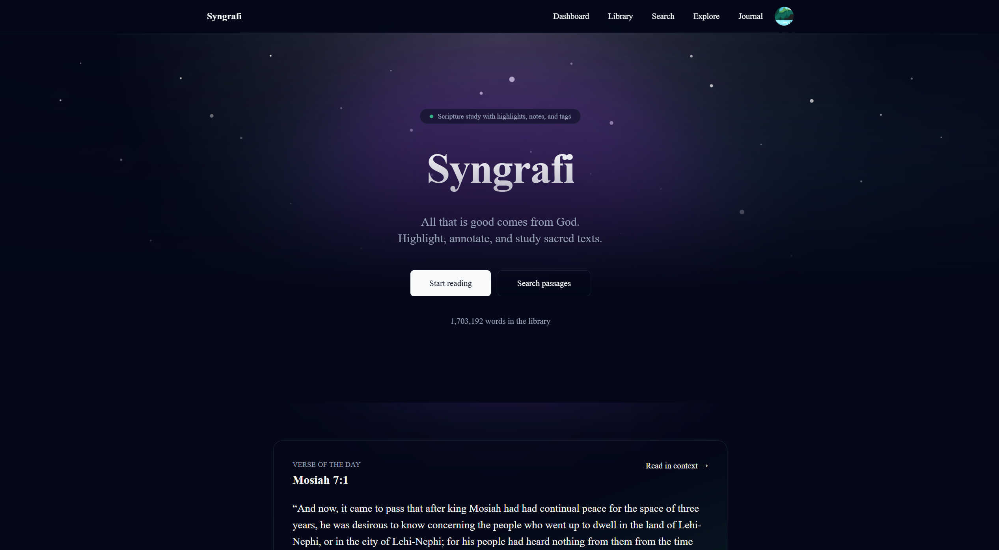

Syngrafi

Syngrafi is a scripture study experience with highlights, notes, and tags—built around semantic search so you can find passages by idea, not just keywords.
Explore the library, search semantically, and move from close reading to broader comparisons across traditions.
- Highlight, annotate, and tag passages
- Search by idea (semantic matching)
- Comparative analysis side-by-side